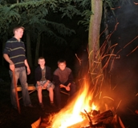
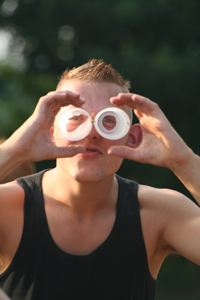

Tentenkamp
Tentenkamp op de Strubben
Voor jongeren in middelbare schoolleeftijd organiseren wij het tentenkamp. In een groep met leeftijdsgenootjes kampeer je op het terrein van de Strubben. Het is een heerlijke vakantieweek zonder je ouders, maar met jongeren van je eigen leeftijd. Een team van leiding trekt dag en nacht met de groep op.
Kamperen
Er passen ongeveer 6-8 jongeren in een tent; jongens en meiden slapen apart. De leiding slaapt in een eigen tent. Iedereen moet zijn eigen luchtbed, slaapzak en kussen meenemen. We hebben in elk kamp een grote groepstent, waar we samen eten en waar bij regen programma's plaatsvinden.
Hoe kan een dag op kamp eruit zien?
Elk jaar is er een thema voor onze kampen. Dit jaar is dat: 'Wakker Worden!' Elke dag zijn er activiteiten die te maken hebben met het thema. Na het ontbijt is er 's morgens programma. Dit kan van alles zijn: creatief, sportief of serieus aan de slag met het thema. Soms gebruiken we de Bijbel, dus het is handig om deze wel mee te nemen.
Tussen de middag eten we warm. Er is een speciale keukenstaf die voor alle kampen kookt, dus we hoeven het alleen maar op te halen met een kar. De jongeren hebben om de beurt corvee: tafel dekken, thee zetten, afwassen, wc's schoonmaken 'pleecorvee' of aardappelen schillen 'pitcorvee'. Na het eten en afwassen begint er een nieuw programma en zo vliegt de middag voorbij. In de vele uurtjes tussendoor wordt er binnen de kampen vaak veel muziek gemaakt of geluierd in hangmatten of in het gras.
's Avonds is er een broodmaaltijd en daarna begint de dagelijkse 'kampetitie': een kleine sportcompetitie met gemixte teams van alle kampen waarbij er meestal een heerlijke taart te winnen valt. Na een half uurtje bewegen is er 's avonds weer programma en vaak wordt er daarna werk gemaakt van het aansteken van het kampvuur. De dag wordt afgesloten met een dagsluiting en als we moe zijn van het zingen, kletsen en zitten bij het kampvuur is het tijd om naar bed te gaan.
Elke dag weer anders…
Niet elke dag is hetzelfde op kamp. Op het programma staat bijvoorbeeld ook een middagje naar een zwembad, een filmavond met lekker snacken en een bonte avond waarbij iedereen een gekke act vertoond. Als het heerlijk weer is, trekken we er op uit naar de Iberenplas om te zwemmen. Dat is ongeveer een kilometer lopen vanaf ons kamp.
Vriendschap & Geloof
Drie van de vier jongeren die naar een Strubbenkamp geweest zijn, komen het volgende jaar weer terug. Omdat je in één week zo intensief met elkaar optrekt en de kans krijgt om elkaar zo goed te leren kennen, ontstaan er vaak nieuwe vriendschappen. Daarnaast leer je in een week veel over jezelf, God en je relatie met God. We zijn heel dankbaar dat er jongeren in onze vakantieweken tot geloof komen.